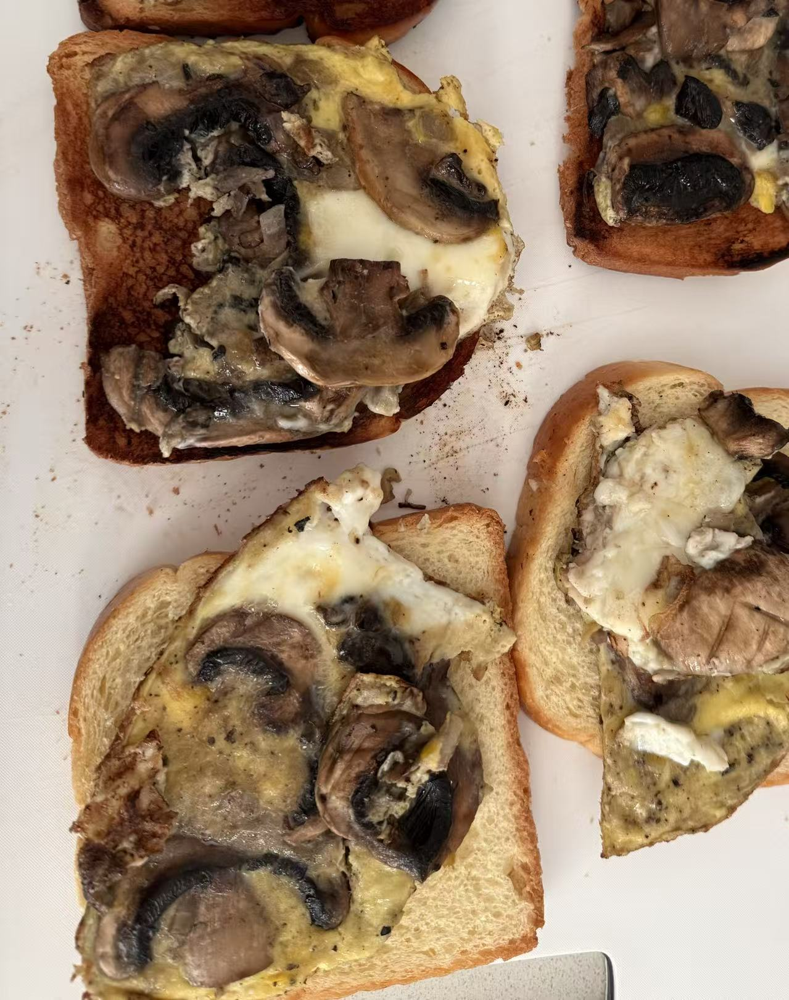
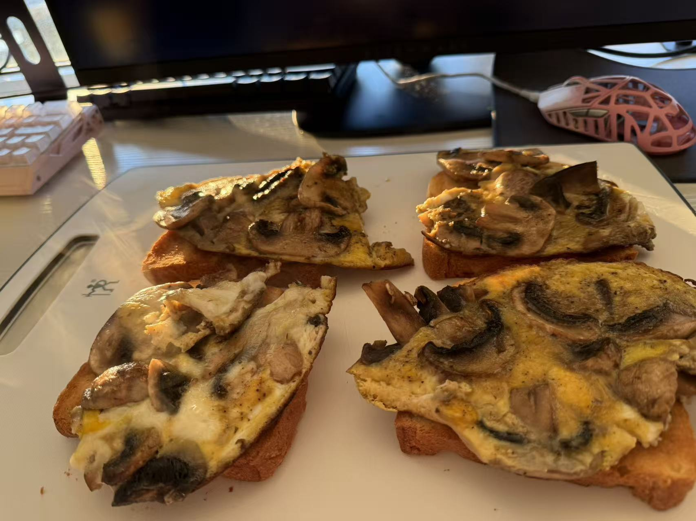

A quick, warm, simple breakfast with soft eggs, mushrooms, and golden toast.
The whole process only takes15 MINUTES
Jump to the steps ↓WHAT YOU NEED
A bowl, fork, cutting board, knife, nonstick pan, and spatula.
LET'S MAKE IT
FROM THE KITCHEN
Follow the recipe, then take a picture of your sandwich!

01 — Made by Zoey

02 — Made by Jesse